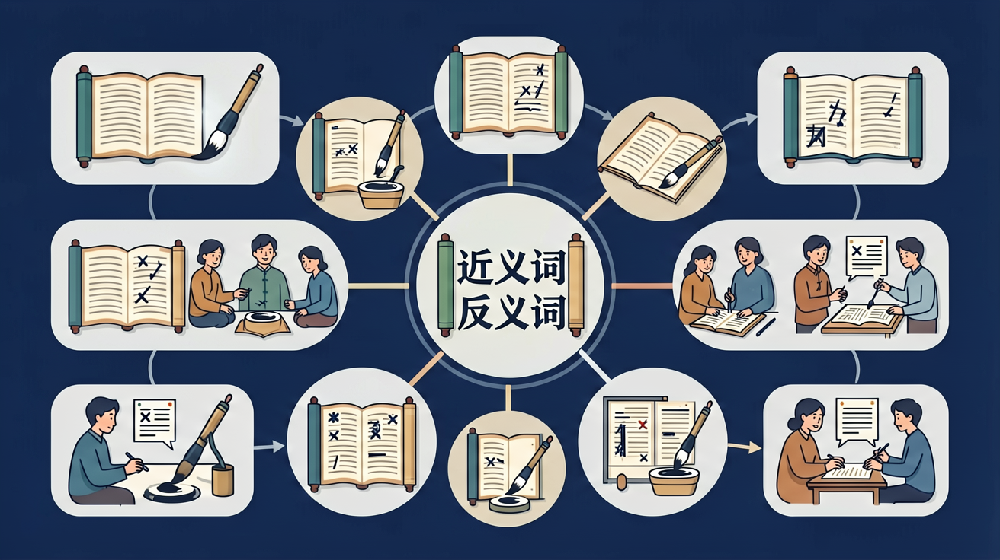

🎯 能说出5组常见近义词的细微差别
🎯 能判断给定词语的恰当反义词
🎯 能分析句子中近义词替换后的表达效果
❓ 为什么有的词意思差不多却不能随便换？
❓ 反义词是不是只要意思相反就行？
❓ 学近义词对写作文有啥用？
学完这一课，这些问题你都能自信地回答。
下列哪组是近义词？
'寒冷'的最佳反义词是？
近义词意思相近但不完全相同，反义词意思相反或相对。积累并辨析近反义词，能让用词更准确，也能帮助理解课文中的词语替换与对比。
近义词用换词法看语气轻重、范围大小、搭配习惯有何不同。反义词成对记忆，并注意有的词在不同义项上反义不同。造句检验是否用准。
常见误区：常见误区是近义词完全等同换用，或反义词记错对象。应结合语境辨析。
选择近义词填空时，最该注意？
把“喜欢—爱好—热爱—痴迷”按程度排成梯子，体会近义词强弱。写作选用更贴切的那一级。
And：学生知道词语有不同说法
But：分不清哪些词能互相替换
Therefore：明确同义词要意思相同
同义词就像双胞胎，长得不一样但意思一样。比如‘高兴’和‘快乐’都表示开心，但写法不同。注意：同义词不是100%相同哦！‘妈妈’和‘母亲’是同义词，但对小朋友说‘母亲节快乐’就有点怪怪的。
🌍 你看动画片里，小猪说‘我好快活呀’，小兔说‘我真开心’，其实他俩心情是一样的～
哪个和‘美丽’是同义词？
And：学生明白事物有对立面
But：容易把不相关的词当反义词
Therefore：学会找真正的反义词
反义词就像拔河比赛的两头，意思完全相反。比如‘大’和‘小’，‘白天’和‘黑夜’。关键看能不能形成对抗关系！注意：不是所有词都有反义词，‘苹果’就没有反义词哦。测试方法：中间加‘不’字试试，‘大→不大’就是‘小’。
🌍 夏天吃冰淇淋觉得凉，冬天喝热水觉得暖，这就是反义词在生活中的较量！
‘快速’的反义词是？
And：能区分简单同反义词
But：遇到复杂词就犯迷糊
Therefore：掌握词语变形规律
很多同反义词是加‘不’‘很’变出来的！比如：‘容易→不容易’就是反义词，‘喜欢→很喜欢’就是程度更强的同义词。特殊例子：‘好’的反义词可以是‘坏’（东西）或‘差’（成绩）。记住：一个词可能有多个同义词或反义词！
🌍 你考100分妈妈说‘真棒！’，考60分说‘要加油’，这就是‘棒’和‘差’的反义关系呀！
‘认真’的同义词是？
And：掌握基本概念
But：不会灵活运用
Therefore：培养词语分析能力
当侦探破案要三步：1.看词语本意（‘老’可以指年龄大）；2.找关系（‘老↔新’是反义，‘老↔年迈’是同义）；3.结合句子判断。比如‘这本书很老’，这里的反义词是‘新’不是‘年轻’！关键要看词语在具体句子中的意思。
🌍 就像玩跷跷板，小明80斤和小红80斤是同义词（重量相同），和小华40斤就是反义词啦！
‘冷清’的反义词最可能是？
近义词像双胞胎，反义词像拔河的两头
近义词是意思相近的词，反义词是意思相反的词
近义词比'像'，反义词比'不像'
看'快乐-高兴'像不同颜色的气球，'大-小'像天平的两端
写作文时，近义词让句子更丰富，反义词让对比更强烈
关于近义词说法正确的是？
测量词语的'亲密度'和'对立度'
✅ '美丽'多形容风景，'漂亮'多形容人
💡 忽视词语搭配习惯
✅ 在'声音高'中反义词是'低'
💡 忽略一词多义现象
口诀：近义相近不同样，反义相对不相让
类比：近义词像同款不同色的书包，反义词像开关的两头
先独立作答，再点选项查看对错与错因。
下列哪组词语是近义词？
'骄傲'的反义词最合适的是？
老师让用'美丽'造句，下列哪句最合适？
'安静'的反义词是____
答案：吵闹
两者表示声音环境完全相反
和'忽然'意思相近的词语是____
答案：突然
都表示事情发生得很急促
点击节点跳转到对应章节；可切换布局。